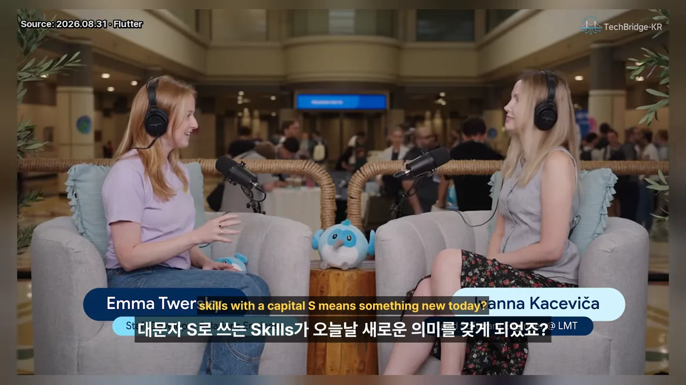
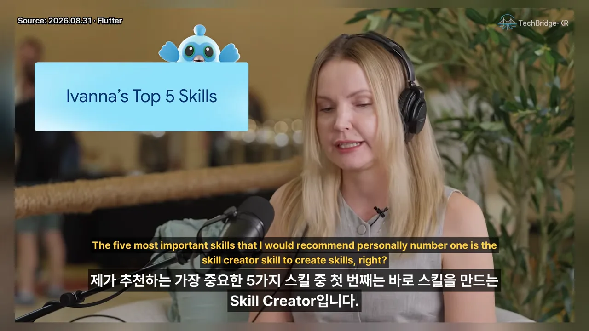
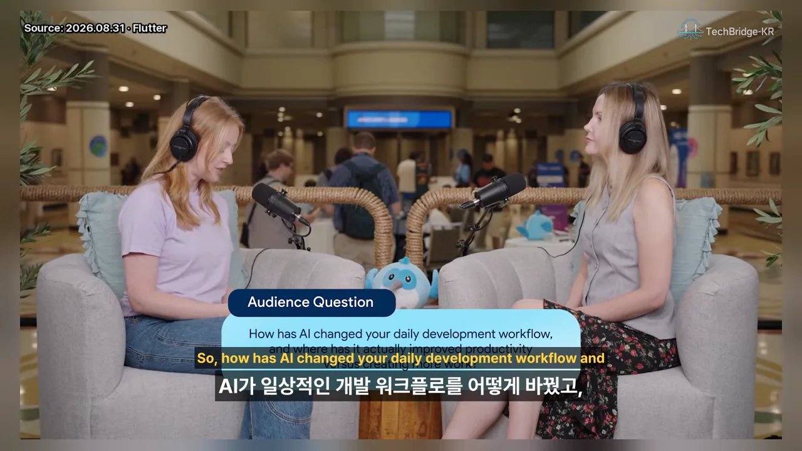

스킬은 프롬프트·규칙과 무엇이 다를까요
Fluttercon USA 행사장 한쪽에서 Flutter 팀의 Emma가 Ivanna Kaceviča와 마주 앉아 이야기해요. 아래 화면 오른쪽 이름표에 Ivanna의 이름과 소속(LMT(Latvijas Mobilais Telefons))이 보여요. 대담 형식이라 슬라이드가 없어서, 이 문서의 그림은 대부분 Ivanna가 말로 설명한 구조를 옮겨 그린 거예요.

Ivanna는 AI 코딩 도우미에게 일을 시키는 방법을 세 층으로 나눠요. 가장 가벼운 건 '이거 해 줘, 버그 고쳐 줘' 같은 메시지예요. 그다음이 규칙이에요. 프로젝트 지식을 마크다운 파일 하나에 적어 두고, 에이전트가 늘 읽게 해요.
에이전트 스킬도 마크다운 파일과 여러 자료로 이뤄져 있어요. 차이는 읽는 때예요. 에이전트가 필요하다고 판단할 때만 불러와요. 규칙에 적어 둔 걸 매번 전부 읽는 대신, 지금 작업과 관련된 스킬 하나만 읽으면 돼요. 이렇게 필요한 만큼만 꺼내 읽는 방식을 점진적 공개라고 불러요.
진행자 Emma는 스킬을 가장 잘 쓰는 법이 결국 자기 일에 맞춰 직접 만드는 것이라고 덧붙여요. 팀도, 기업도 각자 스킬을 만들게 될 거라는 얘기예요.
언제 스킬을 만들까요
Ivanna가 꼽는 첫 번째 신호는 반복이에요. 코드 리뷰를 할 때마다 같은 확인 순서를 밟는다면, 그 순서를 템플릿이나 단계별 지침으로 적어 둔 것이 곧 스킬이에요.
두 번째는 반복하지 않는 일이에요. 앱에 모바일 광고를 붙이는 건 한 번이면 끝나지만, 광고 기능 전체를 구현해야 해서 덩치가 커요. 이런 일은 'Flutter 앱에 구글 광고 붙이기' 같은 스킬이 이미 있을 가능성이 높아요. 받아서 쓰고, 일이 끝나면 프로젝트에서 빼면 돼요.
flowchart LR
A["하려는 일"] --> B{"매번 반복하나요?"}
B -- "예" --> C["직접 스킬로 적어 둬요
예: 코드 리뷰 순서"]
B -- "아니요" --> D{"한 번이지만
크고 자동화하고 싶나요?"}
D -- "예" --> E["있는 스킬을 받아 쓰고
끝나면 빼요
예: 모바일 광고 붙이기"]
D -- "아니요" --> F["프롬프트로 충분해요"]
두 번째 경우에서 '인터넷에서 스킬을 받는다'는 말이 나오자, 진행자는 사람들이 스킬의 개인정보 문제를 잘 생각하지 않는다고 짚어요. 여기서 다음 이야기로 넘어가요.
MD 파일도 위험할 수 있어요
Ivanna는 개인정보보다 보안이 더 문제라고 바로잡아요. 스킬은 그냥 MD 파일이라 무슨 일이 생기겠나 싶지만, 직접 조사해 보니 스킬도 프롬프트 인젝션에 걸릴 수 있었어요. 인터넷에서 받은 MD 파일이 에이전트에게 키를 훔치라고 시킬 수 있다는 거예요.
더 까다로운 건 눈에 안 보이는 부분이에요. 글이 멀쩡해 보여도 숨은 유니코드 명령이 들어 있을 수 있어요. 그래서 Ivanna는 받기 전에 아래 순서를 권해요.
flowchart TD
A["스킬이 필요해요"] --> B{"공식 스킬이 있나요?
Flutter·Dart 공식, 패키지 관리자"}
B -- "예" --> C["공식 스킬을 써요
인젝션 위험이 거의 없어요"]
B -- "아니요" --> D["검색 첫 결과를 바로 받지 않아요"]
D --> E["내용을 직접 읽어요
숨은 유니코드 명령까지"]
E --> F["확인한 뒤에 써요"]
MD files are not that harmless actually.
MD 파일은 사실 그렇게 무해하지 않아요.
— 영상 03:57
스킬도 유지보수해야 해요
진행자는 Flutter 팀에서도 공식 스킬을 만든 뒤 어떻게 유지할지 고민 중이라고 말해요. 사실상 저장소 하나를 새로 관리하는 일이라서요. Ivanna도 커뮤니티가 함께 만드는 Flutter 스킬 저장소를 운영하는데, 적어도 2주에 한 번은 바뀐 게 있는지, 고칠 게 있는지 확인한다고 해요.
사람은 어디에 있어야 할까요
'AI가 AI 코드를 돕는 도구를 쓰는' 상황에서 사람의 자리를 묻자, Ivanna는 직접 글을 쓰는 사람보다 관리자에 가깝다고 답해요. 대부분의 도구에 skill-creator 명령이 있고, 없으면 '이런 스킬을 만들어 줘'라고 말하면 돼요. 다만 에이전트가 만들며 던지는 질문에 답하고, 결과물을 꼭 읽고 고치라고 해요. 그냥 자동화에 맡기지 말고 손잡이를 쥐고 있으라는 뜻이에요.
추천 스킬 1~3: 만들기, 리뷰, 새 기능
진행자가 추천 스킬 다섯 개를 묻자 화면 왼쪽 위에 'Ivanna's Top 5 Skills' 카드가 떠요. 여기서부터 11분 30초까지가 다섯 스킬 이야기예요. 먼저 전체를 표로 보고 하나씩 볼게요.

| 번호 | 스킬 | 무엇을 해 주나요 |
|---|---|---|
| 1 | Skill Creator | 스킬을 만드는 스킬. scripts·references·assets까지 채워 줘요 |
| 2 | 코드 리뷰 | 리뷰 에이전트와 PR(Pull Request) 트리아지 에이전트가 서로 검토해요 |
| 3 | 새 엔드포인트 붙이기 | 새 기능마다 반복되는 화면·데이터 계층 작업을 템플릿대로 해요 |
| 4 | Flutter 레이아웃 기초 | Row, Column, Wrap, Stack을 언제 쓰는지 알려 줘요 |
| 5 | 웹 화면 캡처 QA | 앱을 웹에서 띄워 실제 스크린샷을 찍어요 |
1번 Skill Creator
스킬을 만드는 스킬이에요. 우리는 보통 SKILL.md만 쓰고 끝내는데, 스킬 폴더에는 scripts, assets, references도 둘 수 있어요. Skill Creator는 이렇게 잊기 쉬운 부분까지 써 줘서 스킬을 더 강하게 만들어요.
2번 코드 리뷰 — 두 에이전트가 서로 확인해요
Ivanna는 자기 코드 리뷰 스킬을 1년 넘게 써 왔고, 공개 저장소에도 올려 뒀어요. 여기에 Kevin Moore의 PR 트리아지 스킬을 함께 써요. 한 에이전트는 코드 리뷰를, 다른 에이전트는 PR 트리아지를 맡고, 서로의 보고서를 확인하게 하면 결과가 아주 좋다고 해요.
남은 한계도 짚어요. 에이전트는 코드가 잘 짜였는지는 판단하지만, 그 코드가 애초에 필요한지는 늘 판단하지 못해요. 이 부분은 사람이 더 잘해요. 에이전트에게 필요한 맥락과 기억이 있다면 에이전트도 할 수 있다고 덧붙여요.
3번 새 엔드포인트를 붙이는 우리 팀 스킬
거의 모든 프로젝트에 필요하지만 프로젝트마다 모양이 다른 스킬이에요. 백엔드에 새 엔드포인트가 생기면 앱에서 할 일이 늘 비슷해요. 새 화면을 내비게이션에 넣고, 앱이 이미 쓰는 스캐폴드와 디자인 시스템을 맞추고, 리포지토리와 데이터 소스를 만들어요. 지루하지만 새 기능마다 되풀이되니 자동화할 만하다고 해요.
핵심은 스킬 설명란이에요. '우리 앱에 새 기능을 추가할 때 사용'이라고 적어 두면, 새 기능을 요청받을 때마다 에이전트가 이 스킬을 읽고 assets 폴더의 템플릿을 보며 화면을 추가해요.
추천 스킬 4~5: 레이아웃 기초, 화면 캡처 QA
4번 Row와 Column 같은 레이아웃 기초
Ivanna도 이상하게 들릴 수 있다고 인정하는 스킬이에요. 에이전트는 결과를 내놓는 데 보상받도록 학습돼요. 그래서 강한 모델도 '왼쪽에 글, 오른쪽에 이미지' 같은 요청에 Container와 패딩, Stack을 어색하게 조합하곤 해요. 실제로 필요한 건 Row 안에 Flexible이나 Expanded를 쓰는 정도인데 말이에요.
그래서 Row, Column, Wrap, Stack이 Flutter에서 어떻게 동작하고 각각 언제 쓰는지 알려 주는 작은 스킬을 넣어 둬요. 에이전트가 하드코딩된 위치 대신 제대로 된 레이아웃을 쓰면, 첫날부터 반응형 디자인이 된다는 게 Ivanna의 설명이에요.
5번 웹에서 띄워 화면을 찍는 QA 스킬
Ivanna가 직접 만든 스킬이에요. 앱을 웹에서 띄우고 실제 화면을 스크린샷으로 찍어 둬요. 그러면 QA를 맡은 사람이나 다른 에이전트가 코드와 통과한 테스트만 보는 게 아니라 화면을 눈으로 보고 UI(User Interface) 결함을 찾을 수 있어요. 사람은 QA에 끼기 귀찮아하니 다른 에이전트에게 맡겨도 된다고 웃으며 덧붙여요.
| 골든 테스트 | 실제 스크린샷 (5번 스킬) | |
|---|---|---|
| 쓰는 곳 | UI 회귀 잡기 | QA, 화면 결함 찾기 |
| 번거로운 점 | 폰트와 이미지 로딩을 따로 처리해야 해요 | 웹에서 띄우기만 하면 돼요 |
| 결과물 | 기준 이미지와 비교 | 정지 화면, 때로는 움직이는 WebP |
Ivanna는 골든 테스트를 버리지 않아요. UI 회귀는 여전히 골든 테스트로 잡고, QA에는 실제 스크린샷을 써요. 제스처 같은 동작은 움직이는 WebP로 남겨요. iPhone 시뮬레이터에서 앱이 뜨기를 기다릴 필요 없이, 단계별 스크린샷을 이미지로 넘겨 보며 바로 결함을 찾아요.
AI로 바뀐 하루
마지막 질문은 X에서 시청자에게 받은 거예요. 화면 위쪽 'Audience Question' 카드에 질문 앞부분이 적혀 있어요. 'AI가 매일의 개발 흐름을 어떻게 바꿨고, 어디서 실제로 생산성을 높였고 어디서 일을 더 만들었나요?'라는 질문이에요.

Ivanna는 자신을 '룰렛 대신 토큰을 다 쓰는 걸 즐기는 사람'이라고 소개해요. 컴퓨터 세 대에서 각각 Claude, Codex, Antigravity를 돌리고, 이들이 서로 작업을 넘겨받아요. 세 곳의 사용 한도를 다 쓸 때까지 일을 이어 가고, 이게 거의 매일이에요. 세 에이전트는 보통 같은 프로젝트를 맡아요.
본업이 끝난 저녁과 주말에는 이 에이전트 팀으로 RevenueCat이 곧 여는 해커톤 Shipaton에 낼 앱을 만들고 있다고 해요.
AI를 믿게 된 계기
진행자가 'AI가 일만 늘리는 게 아니라 진짜 생산적이라고 느낀 순간'이 있었는지 묻자, Ivanna는 처음부터 회의론자가 아니었다고 답해요. 머신러닝과 데이터 엔지니어링을 해 본 적이 있어서 AI가 모든 걸 바꿀 거라고 믿었대요. Midjourney가 나왔을 때 개발자가 아닌 친구들에게도 보여 줬지만 반응은 '그래서 뭐?'였다고 해요. Ivanna에게는 확률과 수학, 숫자를 넣어 숫자를 꺼내는 일인데 그게 그림이 된다는 점이 놀라웠어요.
생산성은 확실히 올랐다고 해요. 오히려 속도를 좀 늦춰야 할 정도래요. 한도가 다 차기 전까지 토큰이 남아 있다는 느낌이 게임처럼 계속 일하게 만든다는 데 두 사람 모두 공감해요.
Flutter와 AI가 잘 맞는 이유
마지막으로 진행자는 AI가 Flutter를 얼마나 잘 다루는지 물어요. Ivanna의 답은 둘로 나뉘어요. 학습 데이터만 보면 Flutter는 Python이나 JavaScript에 한참 못 미쳐요. 4번 스킬처럼 Row·Column 기초를 계속 알려 줘야 하는 이유가 여기 있어요.
그래도 무언가를 만들어 내는 쪽에서는 아주 좋다고 해요. Flutter는 '하나 값에 둘'을 준다는 게 Ivanna가 늘 하는 말이에요. AI로 게임 같은 앱을 만들어 코드 하나로 최소 네 플랫폼에 내보낼 수 있다면, 당연히 Flutter를 고르겠다고 해요.
Actually, I think that's my end moment of — we're doing pretty good.
이게 제 마무리 멘트 같네요. 우리 꽤 잘하고 있어요.
— 영상 14:50